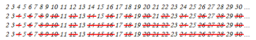

Prime Generation: Sieve of Eratosthenes
程度★ 難度★★★
Sieve of Eratosthenes
這是一個製作質數表的方法。通常簡稱為「篩法」。
列出所有正整數。從2開始，刪掉2的倍數。找下一個未被刪掉的數字，找到3，刪掉3的倍數。找下一個未被刪掉的數字，找到5，刪掉5的倍數。如此不斷下去，就能刪掉所有合數，找到所有質數。
欲刪掉質數i的倍數之時，早已刪掉1倍到i-1倍了，直接從i倍開始。
欲刪掉質數i的倍數之時，早已刪掉「小於i的質數、其倍數」倍了，直接刪掉「大於等於i的質數、其倍數」倍。
乍看下程式碼增多而變慢，實際上cache miss減少而變快。
一個合數x，必定有一個小於等於sqrt(x)的質因數。所有小於等於sqrt(x)的質數，刪掉這些質數的倍數，就能刪掉所有合數了。
顛倒true和false，節省初始化時間。
製作質數表。篩法結束之後，掃描一次陣列即可。
UVa 406 516 524 543 10140 10311 11408
使用bitset來取代bool陣列
一個int有32個位元，可以當作32個欄位來使用，節省記憶體空間，減少cache miss。
不處理2的倍數
不處理2的倍數，節省一半記憶體，增進一點速度。
令陣列第0格代表數字1、陣列第1格代表數字3、陣列第2格代表數字5、……，以此類推。
時間複雜度
考慮迴圈索引值i與j共有多少種：i一共有N種；j一共有(N/p1 - p1) + (N/p2 - p2) + ... + (N/sqrtN - sqrtN)種，其中p1 p2 ...是質數2 3 ...。時間複雜度就是兩者相加，為O(NloglogsqrtN) = O(NloglogN)。
1/1 + 1/2 + ... + 1/N = O(logN) 1/p1 + 1/p2 + ... + 1/N = O(loglogN) 1/p1 + 1/p2 + ... + 1/sqrtN = O(loglogsqrtN) = O(loglogN)
http://en.wikipedia.org/wiki/Divergence_of_the_sum_of_the_reciprocals_of_the_primes 1/1 + 1/2 + ... + 1/n - ln(n) 趨近於Euler-Mascheroni constant 1/p1 + 1/p2 + ... + 1/n - ln(ln(n)) 趨近於Meissel–Mertens constant
至於迴圈最內部，每個合數都被刪掉一次，總共O(N)次。
Prime Generation: Linear Sieve Algorithm
程度★ 難度★★
線性時間篩法
一邊製作質數表，一邊刪掉每個數的質數倍，時間複雜度就能達到O(N)。
Prime Generation: 6n±1 Method
程度★ 難度★
6n±1 Method
這是一個精簡版的篩法，原理是：只拿2和3這兩個質數先篩過一遍，剩下的數字則用試除法驗證是不是質數。
2和3的最小公倍數是6，我們就把所有數字分為6n、6n+1、6n+2、6n+2、6n+3、6n+4、6n+5六種（n是倍率）。除以六會餘零的數字為6n，除以六會餘一的數字為6n+1，以此類推。
可以看出6n、6n+2、6n+3、6n+4會是2或3的倍數，不屬於質數。因此，只要驗證6n+1和6n+5是不是質數就可以了。（6n+5也可以寫成6n-1，意義不變。）
6n-1到6n+1，再到下一個6n-1，再到6n+1，把這些要驗證的數字由小排到大，可以發現之間的差值會是2 4 2 4 2 4 ...不斷跳二跳四。實作程式碼時，就可以直接用加法加二加四，而不必用乘法及加減法計算6n-1、6n+1，如此一來程式的執行效率會好一點。
驗證的順序是：數字2和3明顯的是質數，不必驗證；若是從數字5開始驗證，那麼下一個要驗證的數字就是5+2，再下一個就是5+2+4，再下一個就是5+2+4+2，如此不斷下去。
這個方法的時間複雜度是O(NsqrtN)，空間複雜度是O(1)。事實上6n±1法比篩法慢上許多。不過6n±1法的程式碼構造較為單純，當要枚舉的質數範圍不大時，有機會跑得比篩法還快。另外，6n±1法不需要開一條超大陣列來做計算，比起篩法它節省了很多空間，這也是它的優點。
Primality Test
程度★★ 難度★
Primality Test
質數測試，測試一個數字是否為質數。
質數測試屬於P問題，不過以下介紹的皆非多項式時間的演算法，甚至是不保證結果正確的演算法。若對多項式時間、保證結果正確的演算法有興趣，可上網搜尋AKS Algorithm。
要進行質數測試，也可以直接運用篩法製造所有質數，再來判斷質數。
Divisibility Primality Test
整除性測試法。依照質數定義，一個質數p不會被大於1且小於p的數字整除，只要把這些數字都拿來試除，就可以判定一個數字是不是質數。
此演算法其實就是窮舉所有可能的因數一一試除。
這個演算法會進行sqrt(n)-1次除法，可推得時間複雜度為O(sqrtN)，然而前提是：不管n多大，每次除法都是O(1)。
當要測試的數字很多時，可以先建立質數表，進行質數測試時僅檢查質因數。
Square Root Primality Test
餘數系統的平方根有個特性：
以質數n為模數，1的平方根一定等於±1（即是1與n-1）。 以合數n為模數，1的平方根除了等於±1（即是1與n-1），也可能等於其他數字。
平方根測試法是運用此特性而想出的方法：
以質數n為模數，0到n-1之間，只有1與n-1，平方之後等於1。 以合數n為模數，0到n-1之間，還可能有其它數字，平方之後等於1。 以n為模數，當2到n-2的每一個數字，平方之後皆不等於1，就推定n是質數。
此演算法的結果不一定正確。通過測試的數字，可能是合數或質數；無法通過測試的數字，一定是合數。
有些合數會被誤判成質數，例如22就會被判定成質數，1^2、2^2、…、21^2模22之後剛好都餘1。
Fermat's Primality Test
費瑪小定理：
若n是質數，a小於n，則a^n ≡ a (mod n)。 若n是質數，a小於n，a不是零，則a^(n-1) ≡ 1 (mod n)。
費瑪質數測試法是運用費瑪小定理而想出的方法：
n是質數，費瑪小定理一定成立：a^(n-1) % n = 1一定成立。 n是合數，費瑪小定理可能成立：a^(n-1) % n = 1可能成立。 當a^(n-1) % n = 1成立，就推定n是質數。
此演算法的結果不一定正確。通過測試的數字，可能是合數或質數；無法通過測試的數字，一定是合數。
使用各式各樣的a來實施測試，那麼判定結果就更準確。
Primality Test: Miller-Rabin Algorithm
程度★★ 難度★★
演算法
結合Square Root Primality Test與Fermat's Primality Test。
此演算法的結果不一定正確。通過測試的數字，可能是合數或質數；無法通過測試的數字，一定是合數。
一、選定一個底數a，大於1、小於n，用來進行費瑪測試。 待測數字n，會是費瑪測試的模數。 二、令 n-1 = u * 2^t，其中t盡量大（u為奇數）。 三、觀察a^u這個數字： 若等於±1， 則表示步驟四，所有數字都是1，永不出現平方根測試的反例。 也表示步驟五，最終將通過費瑪測試。 推定n是質數。 四、依序觀察a^(u * 2^1)、a^(u * 2^2)、…、a^(u * 2^(t-1))這些數字， 每個數字正好是前一個數字的平方： 甲、一旦發現有個數字的平方等於+1， 則表示無法通過平方根測試。 （但是步驟五，最終將通過費瑪測試。） 確定n是合數。 乙、一旦發現有個數字的平方等於-1， 則表示接下來的數字都是1，永不出現平方根測試的反例。 也表示步驟五，最終將通過費瑪測試。 推定n是質數。 五、觀察a^(u * 2^t)這個數字： 甲、若等於+1，表示通過費瑪測試，推定n是質數。 乙、若不等於+1，表示無法通過費瑪測試，確定n是合數。 回、也就是說，a^(u * 2^(t-1))必須等於±1，平方之後才會等於+1。 步驟五才能通過費瑪測試。 回、由於步驟四已經檢查過a^(u * 2^(t-1))是否為±1， 所以步驟五可以省略，直接確定n是合數。
時間複雜度
步驟二：不斷分解因數2，最多log(n)步，需時O(logN)。
步驟三：餘數次方，Divide and Conquer，需時O(logN)。
步驟四：根據步驟二，最多log(n)-1個數字，需時O(logN)。
總時間複雜度為O(logN)，然而前提是：不管N多大，每次餘數乘法都是O(1)。
Strong Probable-prime Base（SPRP）
以過濾合數的角度來看，多取幾個相異的底數a實施測試，判定結果就更準確。
事實上已經有熱心人士，找出特定的底數組合，仔細檢查了各種數字的判定結果，保證判定結果正確。例如底數組合{2, 7, 61}就能正確判斷2^32以下的數字是不是質數。
http://primes.utm.edu/prove/prove2_3.html
http://miller-rabin.appspot.com/
UVa 10956 PKU 1811
Integer Factorization
程度★★ 難度★
Integer Factorization
Factor譯作「因式」，Factorization譯作「因式分解」。
「整數分解」是指因式分解的對象為整數，把一個正整數分解成質因數的連乘積。中學課本則譯作「質因數分解」，著眼於分解結果而非分解對象。
n = 2^n1 * 3^n2 * 5^n3 * 7^n4 * 11^n5 * …
質因數分解屬於NP問題，但是目前還不確定它究竟是P問題或是NP-complete問題，相當特別。
Fundamental Theorem of Arithmetic（算術基本定理）
凡是正整數都可以藉由質因數分解成為一個獨一無二的式子，不同的n就會對應不同的(n1, n2, …)，反方向亦同。
根據算術基本定理，凡是牽扯到乘法、因數、倍數的數學運算，都可以改變成比較簡單的運算。
分解前 | 分解後
n | (n1, n2, ...)
m | (m1, m2, ...)
-----------+--------------------------------------
乘除法 | 加減法
n × m | (n1 + m1, n2 + m2, ...)
n ÷ m | (n1 - m1, n2 - m2, ...)
|
整除 | 大於等於
n % m = 0 | (n1, n2, ...) ≥ (m1, m2, ...)
m | n | n1≥m1 and n2≥m2 and ...
|
最大公因數 | 最小值
gcd(n, m) | (min(n1, m1), min(n2, m2), ...)
|
最小公倍數 | 最大值
lcm(n, m) | (max(n1, m1), max(n2, m2), ...)
|
互質 | 對應項必須有零
n⊥m | min(n1, m1) = 0 and min(n2, m2) = 0 and ...
| n1*m1 = 0 and n2*m2 = 0 and ...
算術基本定理闡述了另一種世界觀，把數字看作是質數的結合。質數的英文prime有著「原始就有」的意思，便是指質數是所有數字的根本。
UVa 11889
Trial Division Factorization Method
把所有可能的因數拿來試除。用質因數會更好；可以預先建立質數表。
UVa 516 583 10179 10290 10329 10392 10622 10780 10791 10879
Fermat's Factorization Method
把一個數字分解成兩個數的乘積（這兩個數不一定是質數）。一直遞迴分解下去，無法再分解的時候就找到質因數了。分解手法如下：
現在要找出 a 和 b 讓 n = a*b 運用平方差公式 x^2 – y^2 = (x+y) * (x-y) 令 n = x^2 – y^2, a = x+y, b = x-y 窮舉整數 x，看看 sqrt(x^2-n) 是不是剛好就是一個整數 y， 如果是整數就找到一組 a 和 b 了。
Integer Factorization: Pollard's ρ Algorithm
程度★★ 難度★★
亂數產生器
此演算法可以找到n的其中一個因數。
使用一個簡單的亂數產生器f(ai+1) = ai2 + c (mod n)，嘗試各種a0與c，製造所有可能的因數，一一試除即可。
以此亂數產生器公式，依序枚舉a0、a1、a2、……，模n的情況下，最終必定循環。繪圖時可以畫成一個ρ的形狀，演算法因而得名。ρ唸作[ro]，可以寫作rho。
運用最大公因數找到因數
因為亂數產生器製造的數字a，a恰是n的因數的機會較小，而a與n有共同因數的機會較大，所以改用d = gcd(a, n)來找到n的因數d。最大公因數有著極快的演算法，對執行速度影響不大。
偵測循環
亂數產生器最終必會出現重覆數字，產生循環。一旦遇到循環，立刻結束枚舉，不再進行重覆運算。
另外，此演算法改用abs(ax - ay)，用數字的差值製造所有可能的因數。筆者不知道如此做的原因。
原論文採用「Floyd's Algorithm」偵測循環。
亦可採用「Brent's Algorithm」偵測循環，效率較佳。
讀者可以思考一下這些問題
一、為何亂數產生器不採用f(ai+1) = ai + c (mod n)這條更加簡單的式子？
二、為何a0至少要是+2？（經過實測，a0最好是+2。）
三、為何c最好不是0和-2？試試看將亂數產生器公式，代入到x和y之中，計算一下x-y，然後計算一下gcd(abs(x-y), n)。
四、為何x等於y的時候，就要馬上結束迴圈呢？
五、如果略去abs()，改成gcd(x-y, n)，對結果有影響嗎？
質因數分解
似乎只要嘗試各種c，就一定可以窮舉出所有可能的因數。筆者不知道原因。
UVa 11476 11466
Euler's Totient Function
程度★★ 難度★★
Euler's Totient Function（Euler's φ Function）
這是一個公式。計算1到n的正整數當中，跟n互質（最大公因數是一）的數，總共有幾個。
首先要將n做質因數分解：
n = p1a1 × p2a2 × … × pkak where p1 … pk are primes
以質因數計算Euler's Totient Function。φ唸做[fai]，可以寫做phi：
φ(n) = n × (1 - 1/p1) × (1 - 1/p2) × … × (1 - 1/pk)
可以採用這個順序計算，避免溢位：
n ÷ p1 × (p1-1) ÷ p2 × (p2-1) ÷ … ÷ pk × (pk-1)
如此就不用一個一個去計算最大公因數了，非常有效率！
質因數分解採用試除法，計算Euler's Totient Function的時間複雜度為O(sqrtN)。預先建立質數表，得加速至O(π(sqrtN))，其中π(N)是1到N的質數個數。
UVa 10299 10179 11064
性質
φ(p) = p - 1 iff p is prime.
φ(pa) = pa - pa-1 iff p is prime.
φ(n × m) = φ(n) × φ(m) iff n and m are relatively prime.
φ(n) = φ(p1a1) × … × φ(pkak) iff n = p1a1 × … × pkak
where p1 … pk are prime.
建立表格
未經改良的篩法，能求出每個數的質因數。運用篩法計算Euler's Totient Function，時間複雜度為O(NloglogN)。
或者，首先運用篩法，為每個數求得一個質因數；然後運用Euler's Totient Function的性質，實施Dynamic Programming。此時得以套用線性時間篩法，時間複雜度為O(N)。
UVa 10820 10990 11327 11424 11426 12493
延伸閱讀：最大公因數的傅立葉轉換就是Euler's Totient Function
http://en.wikipedia.org/wiki/Euler%27s_totient_function#Fourier_transform
N-1
φ(n) = Σ { gcd(n, k) ÷ ei*2π*(n/N)*k }
k=0
Möbius Function
程度★★ 難度★★★
Möbius Function
用排容原理求一個數字的所有因數總和。
ICPC 2116